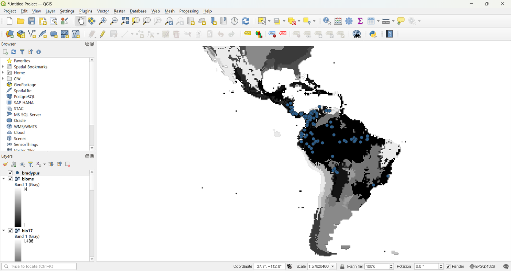
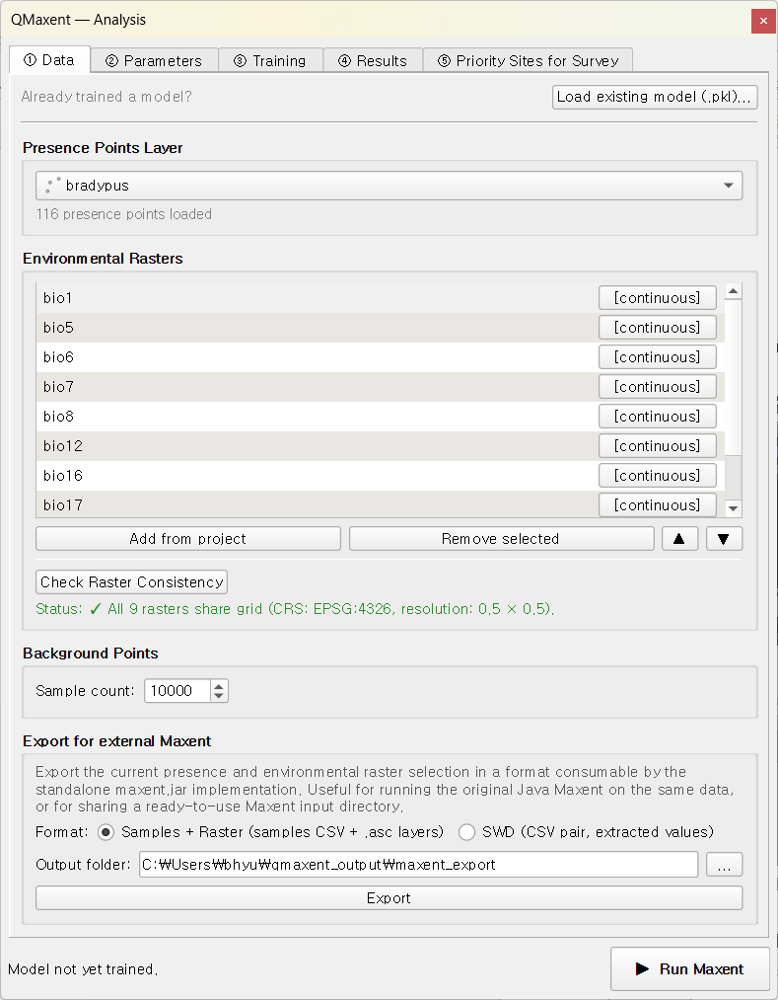
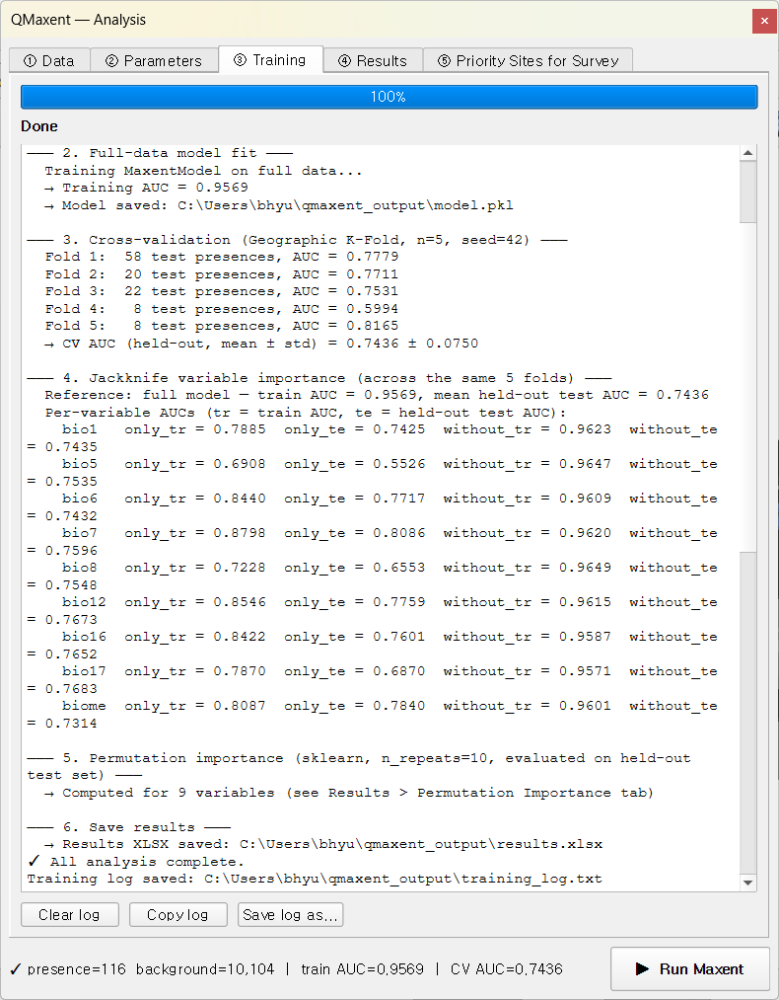
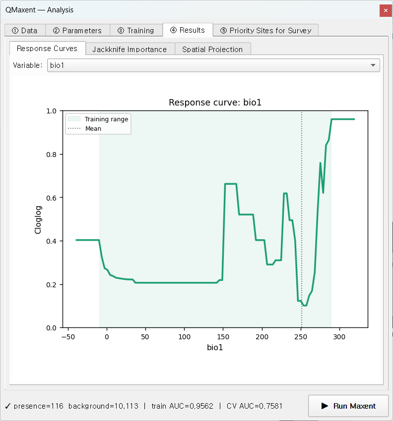
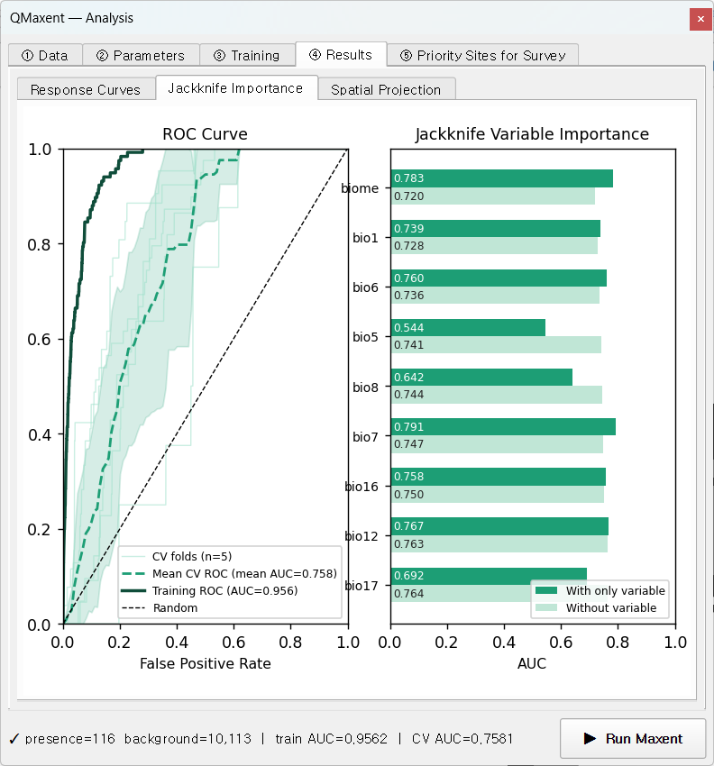
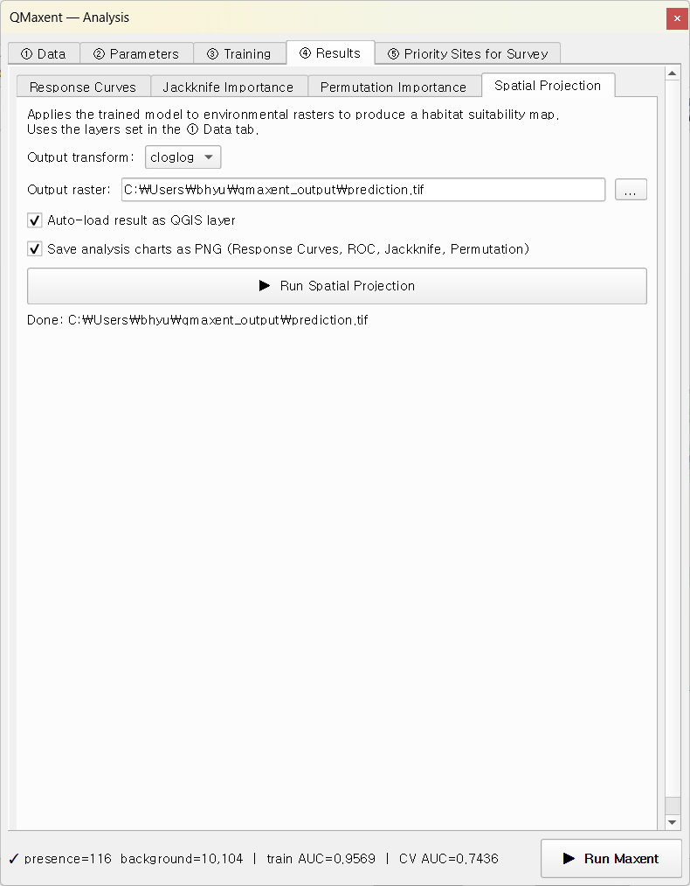
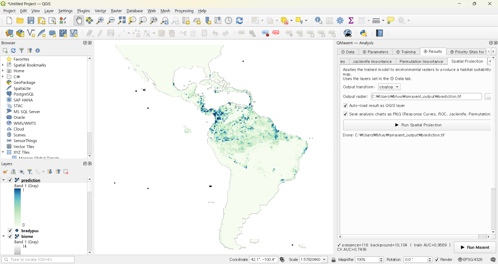
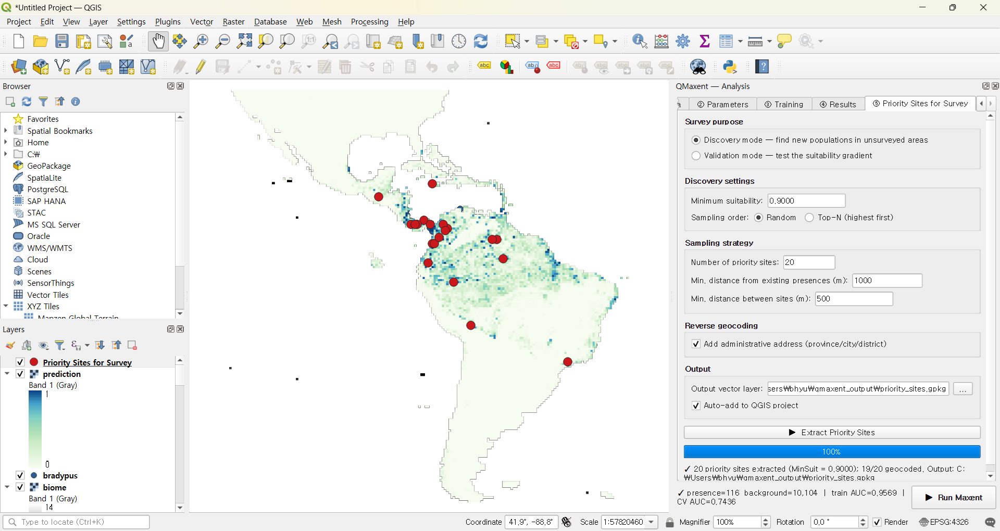
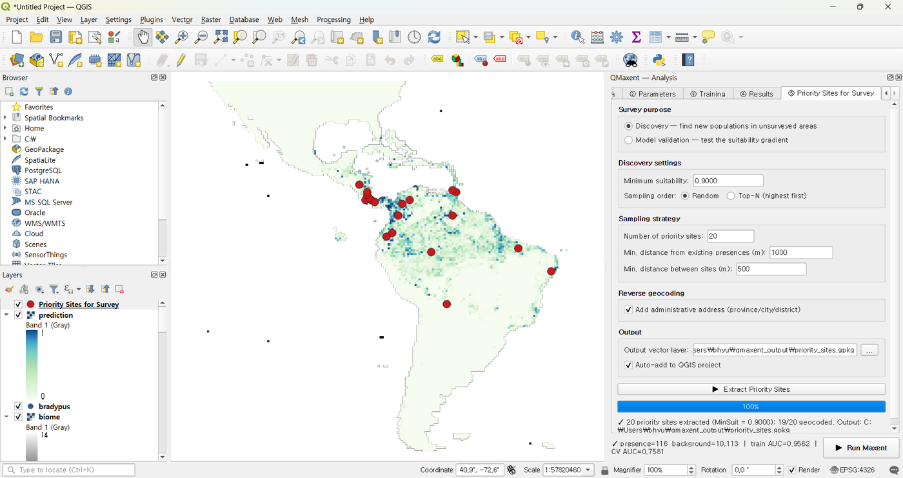

Bradypus variegatus¶
The brown-throated three-toed sloth — Bradypus variegatus — is the canonical Maxent test dataset, originally published with Phillips, Anderson & Schapire 2006 and reused in virtually every subsequent Maxent paper. We use it here as a guided tour of every QMaxent feature: data loading, parameter selection, spatial cross-validation, jackknife importance, projection, and survey planning. By the end of this chapter you will have produced — and be able to defend academically — a complete Bradypus habitat- suitability model.
Dataset¶
The Phillips et al. (2006) dataset contains:
| Layer | Type | Description |
|---|---|---|
bradypus.shp |
Vector point | 116 occurrence records across South and Central America |
bio1, bio5, bio6, bio7, bio8 |
Continuous raster | Temperature variables (WorldClim) |
bio12, bio16, bio17 |
Continuous raster | Precipitation variables (WorldClim) |
biome |
Categorical raster | Biome type (Olson et al. 2001) |
All rasters share the same grid: EPSG:4326, 0.5° × 0.5° cells, full Americas coverage. Total dataset size <100 MB.
Download via Plugins → QMaxent → Download Example Dataset → Bradypus variegatus. Layers are added to the QGIS project automatically:

Loading data into the Analysis dock¶
Open Plugins → QMaxent → QMaxent Analysis. On ① Data, pick
bradypus from the Presence Points Layer drop-down — QMaxent
immediately reports 116 presence points loaded.
Click Add from project to register every loaded raster at once. The
biome row gets a [categorical] tag (its sidecar PAM metadata says
so). Click Check Raster Consistency to verify the grid:

The status line reads
✓ All 9 rasters share grid (CRS: EPSG:4326, resolution: 0.5 × 0.5) —
exactly what you expect from the bundled dataset.
Model setup¶
Switch to ② Parameters. For this tour we accept every default — each default is the literature-recommended value, and accepting them lets us inspect what those choices produce:
- Feature classes: Auto (the maxnet rule of Phillips & Dudík 2008 selects all of LQPHT for 116 presences)
- Regularization multiplier: 1.0 (Phillips & Dudík 2008 recommendation)
- Spatial CV: Geographic K-Fold, 5 folds, fixed seed = 0 (Roberts et al. 2017 default)
- Jackknife variable importance: enabled
- Output files:
qmaxent_output/model.pklandqmaxent_output/results.xlsx
The fixed random seed means anyone re-running this tutorial will get bit-identical results — central to computational reproducibility (Araújo et al. 2019).
Running training and cross-validation¶
Click ▶ Run Maxent. The ③ Training tab takes over and finishes in about 30 seconds:

Reading the log top-to-bottom tells the whole story:
text
→ 10,000 background points sampled
Extracting raster covariates for presence points…
Extracting raster covariates for background points…
→ Presence: 116, Background: 9,997
→ Feature types: ['linear', 'quadratic', 'product', 'hinge', 'threshold']
Training MaxentModel…
→ Model training complete
→ Model saved: …/model.pkl
Computing ROC curve…
→ Training AUC = 0.9562
Running cross-validation…
Fold 1: 22 test presences, AUC = 0.7453
Fold 2: 21 test presences, AUC = 0.7839
Fold 3: 39 test presences, AUC = 0.8097
Fold 4: 26 test presences, AUC = 0.8614
Fold 5: 8 test presences, AUC = 0.5903
→ CV AUC = 0.7581 ± 0.0920 (n=5 fold(s))
Train AUC = 0.956 while CV AUC = 0.758 ± 0.092. That gap is the cost of holding out spatially-distinct validation sets — and a far more honest measure of real-world predictive performance than looking at the inflated training AUC alone, exactly the point Roberts et al. 2017 make.
Fold 5 has the lowest AUC (0.59) and the smallest validation set (8 presences) — in spatial CV, folds are intentionally uneven in area, and one fold can land on a small, atypical region. The pooled CV AUC averages over this variance.
Inspecting variable behaviour¶
Response curves¶
On ④ Results → Response Curves, pick bio1 (mean annual
temperature):

The response is non-monotonic — peaks near 150 and 290 (in 0.1 °C units per WorldClim convention) with a trough around 240. The model recruited hinge features to capture this discontinuity. The shaded Training range band covers the values actually present in the dataset — predictions near −50 (extreme cold) and beyond 320 should be considered pure extrapolation in the Elith, Kearney & Phillips 2010 sense.
Try other variables in the drop-down — you can see which features Maxent recruited for each. Smooth U- or peak-shaped curves suggest quadratic terms; sharp angular discontinuities come from hinge or threshold features.
Jackknife importance and ROC¶
The Jackknife Importance sub-tab combines the ROC and per-variable bars in one figure — the canonical Maxent summary plot since Phillips, Anderson & Schapire 2006:

Reading the ROC:
- Training ROC (solid, AUC 0.956): in-sample fit
- Mean CV ROC (dashed, AUC 0.758): mean across 5 spatial folds
- Per-fold ROC (faint): variance is the model's spatial sub-sample stability
Reading the Jackknife:
The dark bars (model with this variable only) and light bars (model without this variable) tell you each variable's unique contribution. For Bradypus:
biome(categorical) has the strongest univariate signal (AUC ≈ 0.78) and the model loses meaningfully when it is removed — biome boundaries map closely to sloth distribution.bio7(annual temperature range) is second.bio1alone is informative but redundant with several others (small drop on removal).bio5has the lowest stand-alone signal (~0.54), close to random.
This is exactly how the original Phillips et al. 2006 paper used jackknife to argue that biome and seasonality jointly carry the most information about Bradypus.
Spatial projection¶
Switch to Spatial Projection in the same Results tab. Leave cloglog as the output transform (the Phillips et al. 2017 recommended default) and Auto-load result as QGIS layer ticked, then click ▶ Run Spatial Projection:

The map appears in QGIS with auto-styled white-to-green ramping:

The high-suitability core covers Brazil's southeastern Atlantic Forest and the Amazon basin — both well-known sloth strongholds — plus secondary patches across Central America. The model correctly identifies the unsuitability of the Andes (cold, high altitude) and the very dry Brazilian Northeast (Caatinga).
Saving outputs¶
Two files were written automatically:
qmaxent_output/model.pkl— the serialised trained model. Reload it later from the Data tab's Load existing model (.pkl)… button or share it with collaborators. Security note in Saving and reusing models.qmaxent_output/results.xlsx— the multi-sheet supplementary table containing experimental setup, variable list, CV results, jackknife, and response-curve breakpoints. See Exporting results for the sheet-by-sheet layout.
If you ticked Save analysis charts as PNG before projection, three additional 300-dpi PNGs of the response curves, ROC, and jackknife panels are written next to the GeoTIFF — sized for direct paste into a single-column manuscript figure.
Optional: Priority sites for survey¶
A natural next step is to use the trained model to plan follow-up surveys. Switch to ⑤ Priority Sites for Survey, choose Discovery mode, leave the auto-set minimum suitability of 0.9, and click ▶ Extract Priority Sites:

20 candidate locations (red dots) appear on the suitability map, with addresses populated by Nominatim reverse geocoding:

Each candidate is at least 1 km from any known occurrence and at least 500 m from any other candidate, so a single field trip can plausibly cover several at once.
Next steps¶
- The same workflow with messy rasters: Ariolimax example starts from rasters that do not share a CRS or resolution — exercising the Check + Harmonize tools.
- Compare your workflow to a published study: Pitta nympha example reproduces a published Java MaxEnt analysis in QMaxent and discusses where the two pipelines agree and differ.
- Deeper theory: Methodological background explains why each default we accepted in this tour is the right choice.